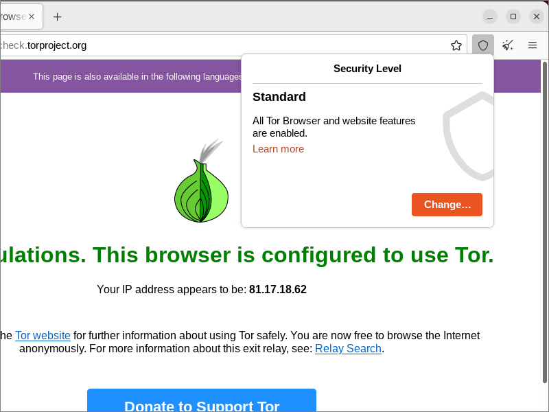

Introduction to Tor Browser
Tor Browser is used in not-free countries to circumvent censorship. The Tor network architecture — triple relays and triple encryption — also provides some privacy.
The combination of censorship circumvention and privacy attracts negative attention from governments. Many countries block the Tor protocol, Tor servers, and even the Tor Project website. However, techniques have been developed to work around these blocks.
This article will introduce you to Tor Browser. Wherever possible, it takes into account the needs of users behind government firewalls.
This article is mainly for users of the Tor Browser on their regular operating system. Parts of it will also apply to users of Tails or Whonix. 1. Download Tor Browser
1.1. Download
First you need to download the Tor Browser installer. Official installers are available for Windows, macOS, Linux, and Android.
If you can reach the official Tor Project website, you can download Tor Browser from the download page. Windows, macOS, and Linux installers are also available in 32 languages from the download languages page. The installers vary in size from around 70 to 80 MB.
If you cannot reach the Tor Project website, the GetTor service can help. Send an email to gettor@torproject.org. It will automatically respond with alternative download links. At least one of the alternative hosting providers should be accessible in each country.
Due to iOS technical limitations, there is no official Tor Browser for iOS. There is, though, an unofficial app named Onion Browser for iOS.
Do not run the installer just yet. We have some preparatory work to do.
1.2. Optionally Verify Download on Linux
If you are on Linux, you can optionally verify your Tor browser download as follows.
Firstly, when you download the Tor Browser installer, also download the signature file that goes with your Tor Browser installer. It has a name that matches the
main download, except that it ends in .asc.
Automatically locate the Tor Browser signing key:
gpg --auto-key-locate nodefault,wkd --locate-keys [email protected]
The results should mention the key 4E2C6E8793298290 along with a message, public key "Tor Browser Developers (signing key) <[email protected]>" imported. Export this key to a keyring
file:
gpg --output ./tor.keyring --export 0xEF6E286DDA85EA2A4BA7DE684E2C6E8793298290
Now verify, using the keyring file you just created, the signature of the download:
gpgv --keyring ./tor.keyring tor-browser-linux64-10.0_en-US.tar.xz.asc tor-browser-linux64-10.0_en-US.tar.xz
You should see a message, Good signature from "Tor Browser Developers (signing key) <[email protected]>".
2. Get Tor Bridges
2.1. Need for Bridges
Many countries block the IP addresses of Tor relays or use deep packet inspection (DPI) to detect and block the Tor protocol.
If your country is one of the ones that blocks direct connections to the Tor network, you may need to use a bridge. Bridges can obfuscate Tor network traffic, making it more difficult for censors to detect.
2.2. Types of Bridges
There are three main types of Tor bridge:
-
Obfs4 bridges work in most countries. They may be public or private.
- Public bridges can either be built-in to the Tor Browser, or obtained from the public bridge database (BridgeDB).
- Private bridges are ones you or a friend create and choose not list in BridgeDB.
- Meek-azure uses a completely different obfuscation technique called domain-fronting. Meek-azure is slow but works in China.
- Snowflake is a new type of bridge, available in some versions of Tor Browser.
2.3. Bridge Lines
The most common type of bridges, obfs4, are defined to the Tor Browser by bridge lines. A bridge line looks like this:
Bridge obfs4 11.11.11.11:2222 B6740861AE06B247f55CB63EA347E248F72CCE08 cert=YjY3NDA4NjFhZTA2YjI0N2Y1NWNiNjNlYTM0N2UyNDhmNzJjY2UwODMzOTg2NGM3N2NjMW
iat-mode=0
The above is a completely fabricated example and not a real bridge line. 11.11.11.11 represents an IP address, 2222 represents a port
number, and B6740861AE06B247f55CB63EA347E248F72CCE08 is a made-up fingerprint.
2.4. Get Bridges
Tor Browser comes with a dozen or so built-in obfs4 bridges. In countries that block Tor IP addresses, you may need to obtain additional obfs4 bridges.
- You can get more bridges from the official Tor Project site. Unobfuscated bridges, also known as vanilla bridges, may work in some environments. If you want these, click Just give me bridges on that page. Otherwise, scroll down to Advanced Options, select obfs4, and click Get Bridges.
- You can also get more bridges by email. From a Gmail account, send an email to bridges@torproject.org. Leave the
email subject empty, and write
get transport obfs4in the email’s message body. - From within Tor Browser. See Request a bridge from torproject.org in section 4.2.
- There is an unofficial Telegram channel for bridge distribution at t.me/tor_bridges.
2.5. Test Bridge Reachability
Before you try to use your bridges, you may want to test their reachability. You can attempt to ping the bridge IP address. Using our sample bridge
line from above, the command would be:
ping 11.11.11.11
This method is not guaranteed to be accurate, since reachability by ICMP and reachability by TCP are two separate things, especially if you are faced with a sophisticated firewall. In any case, the node may have deliberately blocked ICMP requests.
The other thing you can do is to look up the bridge on the Tor Project relay search page. To maintain the secrecy of bridge IP addresses, you cannot search by IP address. However, you can enter the 40-digit fingerprint. This comes after the bridge IP address and port in the bridge line. Using the same example of a bridge line, the fingerprint to search for would be:
B6740861AE06B247f55CB63EA347E248F72CCE08
This is a made-up fingerprint, so do not actually try to search for this example.
3. Install Tor Browser
At this point, you have the Tor Browser installer and, if necessary, a list of reachable bridges. Now you are ready to install Tor Browser.
On Windows, macOS, and Android, just follow the normal procedure to install an app on your platform. On Linux, open a terminal window and issue these commands:
cd ~/Downloads
ls
You should see your downloaded installer. It will have a name that looks like tor-browser-linux64-10.0_en-US.tar.xz. The version number and language
may be different when you try this.
In recent versions of Linux, you should be able to extract Tor Browser directly from the xz file:
tar -xf tor-browser-linux64-10.0_en-US.tar.xz
Change into the extracted directory:
cd tor-browser_en-US
Register the Tor Browser app:
./start-tor-browser.desktop --register-app
Close your terminal. Assuming you are using a Linux distribution that comes with GNOME desktop, click Activities, and search for Tor Browser. Click the icon to launch Tor Browser.
Once you have launched Tor Browser, you can if you wish click Activities again, right-click on the Tor Browser icon in the dash, and select Add to Favorites so that it stays in the dash permanently.
4. Connect or Configure
4.1. Direct Connection
The first time you launch Tor Browser on a desktop or laptop computer, you are presented with an initial screen. This offers you the option to connect directly to the Tor network, or to configure Tor Browser before you connect.
If Tor is not blocked in your country, you can just click Connect. A status bar appears, showing Tor’s connection progress. You can skip the rest of this section.
If Tor is blocked, you must click Configure. That will take you to further options.
4.2. If Tor is Censored in Your Country
On the Settings > Connection screen, under Bridges, you will see three choices:
- Choose from one of Tor Browser’s built-in bridges. This is where you can use a built-in bridge of type obfs4, meek-azure, or snowflake if available.
- Request a bridge from torproject.org. This option is another way to get bridge lines. It uses domain fronting so should be accessible in most countries. This bridge distribution mechanism is also referred to as Moat.
- Enter a bridge address you already know. Select this option if you have already obtained some bridges, either public ones from BridgeDB or private ones you or a friend set up.
4.3. If You Use a Proxy to Connect to the Internet
Under Advanced, on the line Configure how Tor Browser connects to the internet, click the Settings button.
Check the box saying you use a proxy to connect to the Internet. You can then specify a pre-proxy. For example, you may have Shadowsocks or V2Ray configured to listen on localhost port 1080.
If you do not need a proxy to connect to the Internet, then leave this box unchecked.
4.4. Connect
Once you have set up all the options you need, click Connect. A status bar appears, showing Tor’s connection progress.
If there is a problem and you need to look at the Tor logs, go to Settings > Connection > Advanced. Click View Logs. The log may or may not be informative. After copying the log to the clipboard, paste the log into a text editor such as Windows Notepad or Linux Gedit.
4.5. Connection Assist
A new feature automates the process of getting bridges and connecting to the Tor network. It is now present in the production Tor Browser.
Connection Assist tries to detect whether or not Tor is blocked in your location. This may take a couple of minutes. The feature will then attempt to automatically find a working means of connecting. This may take another couple of minutes.
Connection Assist works by looking up and downloading an up-to-date list of country-specific options to try using your location (with your consent). It manages to do so without needing to connect to the Tor Network by utilizing “moat” — the same domain-fronting tool that Tor Browser uses to request a bridge from the Tor Project website.
5. Guided Tour of Tor Browser
5.1. Letterboxing
The first thing you may notice after you connect is that the display size has been rounded to nearest 100 pixels horizontally and vertically. Letterboxing appears around the margins of the display. This is designed to protect your anonymity by making you look like many other users.
The usual advice is not to maximize your browser window, as this could give away your monitor size. This may apply less nowadays, since many people have common monitor sizes. In any case, your main concern may be bypassing censorship rather than complete anonymity and blending in with the crowd.
5.2. Check Connection
Check your connection to the Tor network by visiting check.torproject.org. You should see a headline:
Congratulations. This browser is configured to use Tor.
5.3. Display Circuit Information
Click the padlock icon to display the Tor circuit by which you reached this site.
At the bottom of the circuit information panel is a button, New Circuit for this Site. Pressing this button will give you a new Tor circuit to reach the current site, including a new exit node. This can be useful if a particular website blocks the Tor exit node you were using.
5.4. Display Security Level
Click the shield icon to see your current security level.
If you want to change your security level, click Change. You can select from three levels:
- Standard. All features, including JavaScript, are enabled.
- Safer. JavaScript is enabled only for HTTPS sites. Some fonts and math symbols are disabled. Audio and video are click-to-play.
- Safest. JavaScript is disabled on all sites. Some fonts, icons, math symbols, and images are disabled. Audio and video are click-to-play.
5.5. Display Add-ons
Click the hamburger menu, then select Add-ons and themes. You will see the Tor Browser comes with NoScript. This allows JavaScript only from trusted domains.
5.6. Customize Tor Browser
The icon for NoScript does not appear in your browser by default. To see it, you must customize the browser.
Click the hamburger menu, then More Tools, then Customize toolbar. Drag the icon for NoScript into the toolbar.
When you have finished customizing, close the Customize Tor Browser tab.
5.7. Reset Identity
Click the paintbrush icon to reset your identity. All open tabs and windows will be closed. All private information, such as cookies and browsing history, will be cleared. New Tor circuits will be built. This makes you look like a completely new user.
5.8. Reconfigure Network Settings
When you started Tor Browser for the first time, you made some choices about bridges and a proxy server. You can change these settings at any time. Click the
hamburger icon, select Settings, then select the Connection tab. Alternatively, you can directly put
about:preferences#connection in the URL box.
6. Disable JavaScript
JavaScript can be used to extract information about your computer and to trick you into installing malware. For this reason, some users like to disable JavaScript. If you do this, you will see that some sites do not render without JavaScript. You will have to make some personal choices as to how much JavaScript you will allow. By default, Tor Browser allows JavaScript everywhere. This is to avoid confusing new users.
There are three ways to disable JavaScript in Tor Browser:
- Set the Tor Browser security level to Safest, which disables JavaScript everywhere.
- Select the NoScript icon that you placed in the toolbar. Click the options icon. On the General tab, set the DEFAULT to disallow JavaScript. Optionally, set per-site permissions to allow JavaScript from domains you trust.
- As a failsafe, you can disable JavaScript at the browser level. Visit
about:config, search forjavascript.enabled, and toggle its value to false.
7. Torrc File
7.1. Location of Torrc
A file named torrc controls how Tor behaves. The default torrc generated by Tor Browser should work fine for most users. To find out where
your torrc file is:
- On Windows or Linux, look in a location such as
~/Downloads/tor-browser_en-US/Browser/TorBrowser/Data/Tor - On macOS, look in a location such as
~/Library/Application Support/TorBrowser-Data/Tor.
7.2. Example Torrc
Here is a sample torrc file. The real bridge lines have been replaced by a fake bridge line from our example earlier on.
# This file was generated by Tor; if you edit it, comments will not be preserved
# The old torrc file was renamed to torrc.orig.1 or similar, and Tor will ignore it
Bridge obfs4 11.11.11.11:2222 B6740861AE06B247f55CB63EA347E248F72CCE08 cert=YjY3NDA4NjFhZTA2YjI0N2Y1NWNiNjNlYTM0N2UyNDhmNzJjY2UwODMzOTg2NGM3N2NjMW iat-mode=0
ClientOnionAuthDir /home/username/Downloads/tor-browser_en-US/Browser/TorBrowser/Data/Tor/onion-auth
DataDirectory /home/username/Downloads/tor-browser_en-US/Browser/TorBrowser/Data/Tor
GeoIPFile /home/username/Downloads/tor-browser_en-US/Browser/TorBrowser/Data/Tor/geoip
GeoIPv6File /home/username/Downloads/tor-browser_en-US/Browser/TorBrowser/Data/Tor/geoip6
UseBridges 1
7.3. Country Codes
You can exclude certain countries from the nodes in your circuit by putting an ExcludeNodes directive in your torrc file. Use the ISO 3166 two-character codes to specify countries. For example:
ExcludeNodes {cn},{hk},{mo},{by},{ru},{ir}
Note that there may not be many nodes in the countries you specify. Also, specifying a unique combination of countries makes you less anonymous, since your requests through the Tor network no longer looks like everyone else’s.
You can restrict the country of your exit node with the ExitNodes directive. For example:
ExitNodes {us}
Again, you will need to choose a country that has many exit nodes for this to work, and even so, you still make yourself less anonymous.
To enforce your node rules, even if this breaks your ability to construct a Tor circuit, add a directive:
StrictNodes 1
You need to restart Tor Browser after editing your torrc file.
8. Get Help and Report Issues
Here are some ways you can get support if you encounter problems with Tor Browser:
- You can ask informal questions on social media such as Reddit or Stack Exchange
- You can send an email to frontdesk@torproject.org
- You can browse known issues
- You can join the
#torchannel of the Open and Free Technology Community Internet Relay Chat (IRC)
Updated 2022-07-11